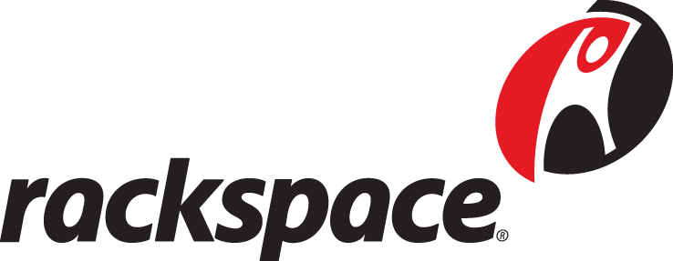
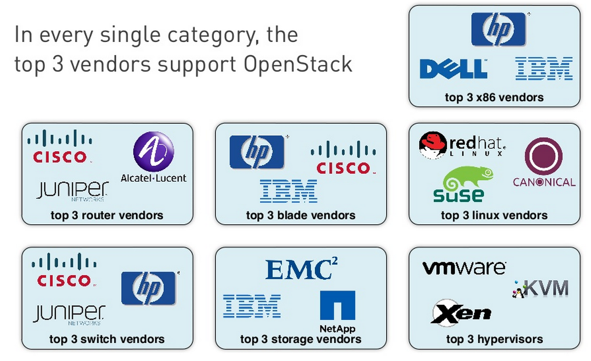

Introducción a OpenStack
Alberto Molina Coballes / @alberto_molina y José Domingo Muñoz Rodríguez / @Pledin_JD

Alberto Molina Coballes / @alberto_molina y José Domingo Muñoz Rodríguez / @Pledin_JD
“Plataforma de cloud computing hecha con software libre para desplegar nubes públicas y privadas, desarrollada con la idea de ser sencilla de implementar, masivamente escalable y con muchas prestaciones”
|  |
|
 |
|
 |
|
Se cede en control del proyecto a la OpenStack Foundation
Fuente: cloudscaling
| Nombre | Equivalente en Amazon WS | Función |
|---|---|---|
| Horizon | Console | Panel web de gestión |
| Nova | EC2 | Gestión de instancias |
| Cinder | EBS | Almacenamiento de volúmenes |
| Keystone | - | Autenticación y autorización |
| Swift | S3 | Almacenamiento de objetos |
| Glance | VM Import/Export | Gestión de imágenes para las instancias |
| Neutron | VPC | Redes virtuales |